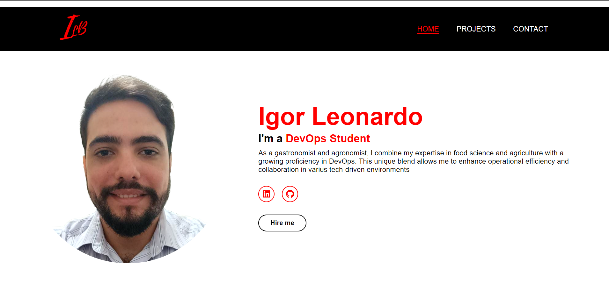

Development and Productivity of Heliconias
My research focused on the development and productivity of Heliconia species, a genus with significant potential as cut flowers due to their morphological diversity. The study was conducted in full sun conditions in the Zona da Mata region of Pernambuco, Brazil, evaluating 16 genotypes over 31 months. Key findings included H. psittacorum x H. spathocircinata cv. Golden Torch as the most productive small genotype and H. bihai as the only large genotype with year-round production. These results are essential for selecting superior genotypes for cultivation and breeding programs.
LINK
Portfolio in HTML and CSS

Building my portfolio website in HTML and CSS enhanced my front-end skills. I learned to use HTML for better accessibility and improved my CSS for attractive designs and responsiveness. This project showcased my creativity and boosted my problem-solving skills. In summary, developing my portfolio website in HTML and CSS not only strengthened my technical skills but also boosted my confidence as a front-end developer. This project serves as a foundational step in my journey to becoming a proficient web developer, preparing me for more complex challenges ahead.
LINK